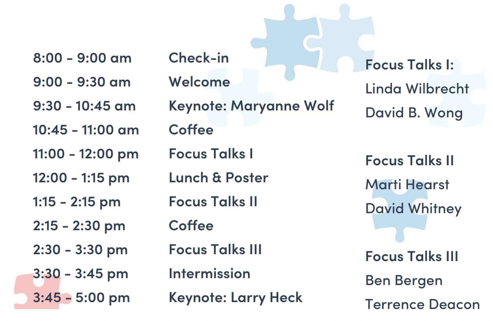

CCSC 2017
[back to conference page <<<]
The Cognitive Science Student Association is pleased to host the ninth annual California Cognitive Science Conference (CCSC) held in April at UC Berkeley. The theme for CCSC 2017 is Mistakes. We will be exploring this exciting topic through the lenses of psychology, neuroscience, linguistics, anthropology, computer science, philosophy and more.
Schedule
Speakers
Keynote Speakers
Larry Heck
Dr. Larry P. Heck is with Google Research as Director of Research, Deep Dialogue. In this role, he leads an effort to teach machines to be conversational through deep learning methods. From 2009-2014, he was the Chief Scientist of the Microsoft Speech products team and later a Distinguished Engineer in Microsoft Research. In 2009, he co-founded the initiative that led to Microsoft’s Cortana personal assistant. From 2005 to 2009, he was Vice President of Search & Advertising Sciences at Yahoo!, responsible for the creation, development, and deployment of the algorithms powering Yahoo! Search, Yahoo! Sponsored Search, Yahoo! Content Match, and Yahoo! display advertising. From 1998 to 2005, he was with Nuance Communications and served as Vice President of R&D, responsible for natural language processing, speech recognition, voice authentication, and text-to-speech synthesis technology. He began his career as a researcher at the Stanford Research Institute (1992-1998), initially in the field of acoustics and later in speech research with the Speech Technology and Research (STAR) Laboratory. Dr. Heck received the BS in Electirical Engineering in 1986 from Texas Tech University and the MS and PhD in Electrical Engineering from the Georgia Institute of Technology in 1989 and 1991, respectively. He is a Fellow of the IEEE with over 100 scientific publications and holds over 50 United States patents.
Maryanne Wolf
Maryanne Wolf is the Director of the Center for Reading and Language Research and the John DiBiaggio Professor of Citizenship and Public Service in the Eliot-Pearson Department of Child Study and Human Development at Tufts University. She received her doctorate from Harvard University's Graduate School of Education. Her work focuses on development of the reading brain and dyslexia, for which she has won numerous awards, including the NICHD Shannon Award for Innovative Research. She is the author of Proust and the Squid, which has been translated into 13 languages, and Tales of Literacy for the 21st Century. Dr. Wolf is currently a visiting fellow at the Center for Advanced Study in the Behavior Sciences at Stanford University where she is developing the New Literacies Network, the goal of which is to provide digital learning experiences for non-literate children in the rural US and around the world.
Focus Talk Speakers
Ben Bergen
Professor Benjamin Bergen is a Professor of Cognitive Science at the University of California, San Diego where he directs the Language and Cognition Laboratory. His research focuses on the cognitive and neural underpinnings of meaning in language. Notable projects related to “Mistakes” include studying how talking interferes with driving, and how the meanings of words affects errors we make when articulating them, in particular when those words are profane. His 2016 book What the F: What Swearing Reveals About Our Language, Our Brains, and Ourselves explores how and why we swear. He received his BA and PhD in Linguistics here at UC Berkeley.
Terrence Deacon
Professor Terrence Deacon has studied emergent processes in human cognition for more than 4 decades, combining human evolutionary biology and neuroscience approaches with a broad range of knowledge across the cognitive science disciplines. Before his arrival at UC Berkeley in 2002, he taught at Boston University and at Harvard where he’d completed dual PhD’s in Education and Biological Anthropology. His research has explored evolutionary structures related to language, fetal and neural cross-species transplantation therapies for Parkinson’s disease, and cross-species comparative studies of brain growth and development in an effort to get at one of the quintessential questions of cognitive science - what it is that makes humans so unique. He is the author of Incomplete Nature: How Mind Emerged from Matter and The Symbolic Species: The Co-Evolution of Language and the Brain, and consistently has students overflowing from lecture halls to attend his highly engaging courses in Anthropology and Evolution of the Human Brain.
Marti Hearst
Dr. Marti Hearst is a professor in the School of Information and the EECS Department at UC Berkeley. Her primary research interests are user interfaces for search engines, information visualization, natural language processing, and improving MOOCs. She wrote the first book on Search User Interfaces, is a member of the CHI Academy and a Fellow of the Association for Computing Machinery.
David Whitney
David Whitney is a professor at UC Berkeley in the Department of Psychology and the Helen Wills Neuroscience Institute. His research aims to understand the perceptual, cognitive, and neural mechanisms that allow humans to perceive and interact with objects in a dynamic world. He focuses on a variety of topics in perception including visual and visuomotor localization, motion perception, object recognition, perceptual and motor crowding, and visual impairments. He is currently on the editorial boards of the Vision Research journal and the Public Library of Science (PLoS ONE). He has been awarded the UC Berkeley Department of Psychology Graduate Mentor award, the InfoVis Best Paper award, and the Vision Science Society Young Investigator award.
Linda Wilbrecht
Dr. Linda Wilbrecht is an Associate Professor of Psychology at UC-Berkeley, and is also a member of the Helen Wills Neuroscience Institute (HWNI). Her research domain is experience-dependent plasticity and value-based decision-making, with an emphasis on understanding the synaptic, circuitry, and behavioral-level changes associated with adolescence. The ultimate goal of her work is to understand how adolescent experience with drugs of abuse and natural reinforcers (such as food) alters neural circuitry and decision-making over the lifespan, and how neural plasticity can be harnessed to reverse addiction. She is a recipient of the 2009 NIMH Biobehavioral Research Award for Innovative New Scientists (BRAINS award) and of a 2010 Presidential Early Career Award for Scientists and Engineers (PECASE).
David B. Wong
David B. Wong is a Professor of Philosophy at Duke University, where he also serves as the Co-director of the Center for Comparative Philosophy. Prior to arriving at Duke, he was a Professor of Philosophy at Brandeis University and a Visiting Professor of Philosophy at Boston University. His research focuses on the range of moral differences and similarities that exist across societies, along with the conflicts that accompany them. In addition, he studies Chinese-Western Philosophy (Confucianism, Daoism, Buddhism) in its relation to moral conflicts. The author of Natural Moralities, David was also awarded Best Essay for 2015 in Dao: A Journal of Comparative Philosophy. Some of his publications include Responses to Commentators, Early Confucian Philosophy and the Development of Compassion and On Learning What Happiness Is. He obtained his Ph.D. from Princeton University and his B.A. from Macalester College.
© 2021 Berkeley CSSA

We are a student group acting independently of the University of California. We take full responsibility for our organization and this web site.